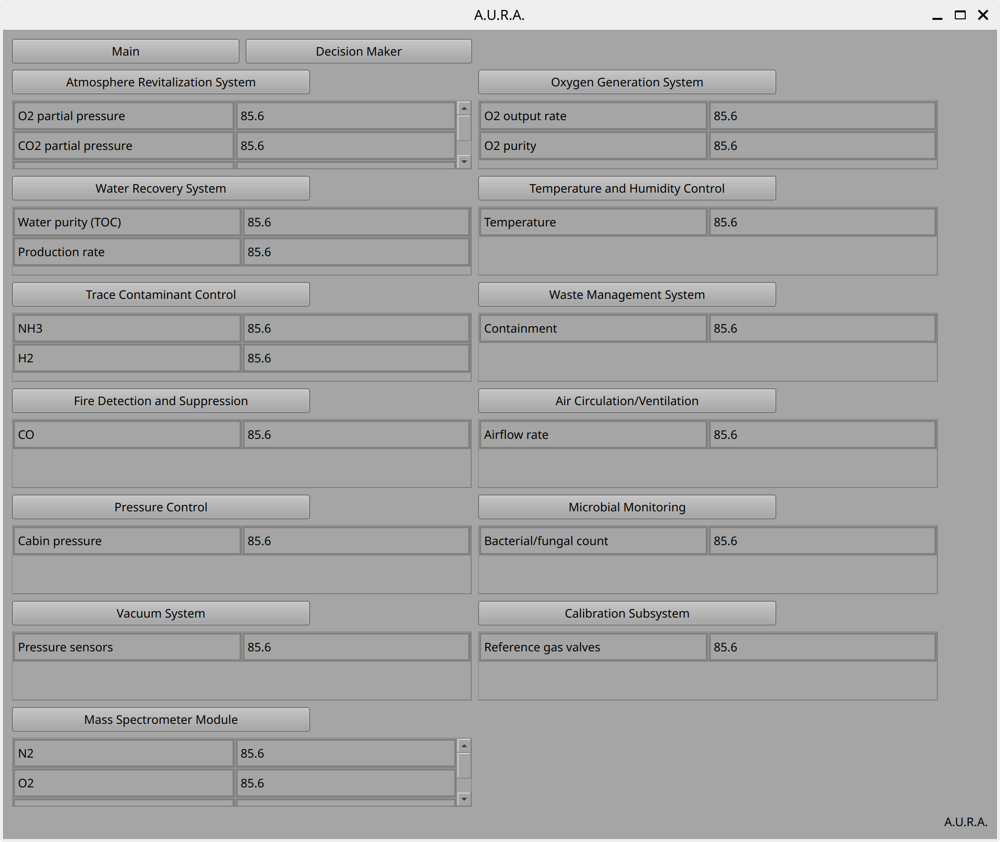
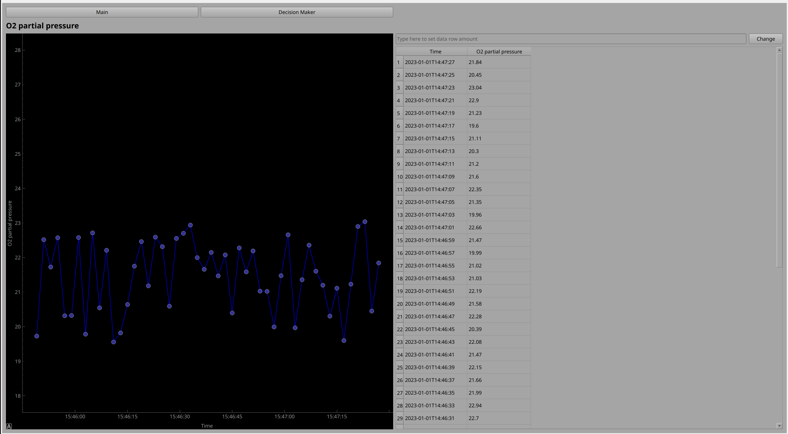
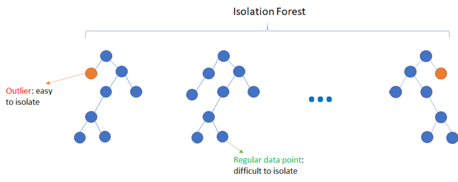
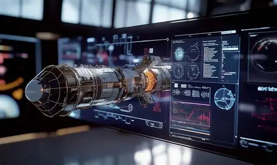
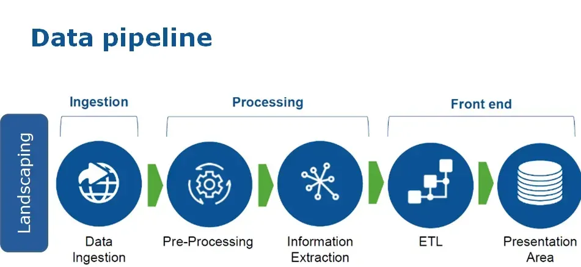
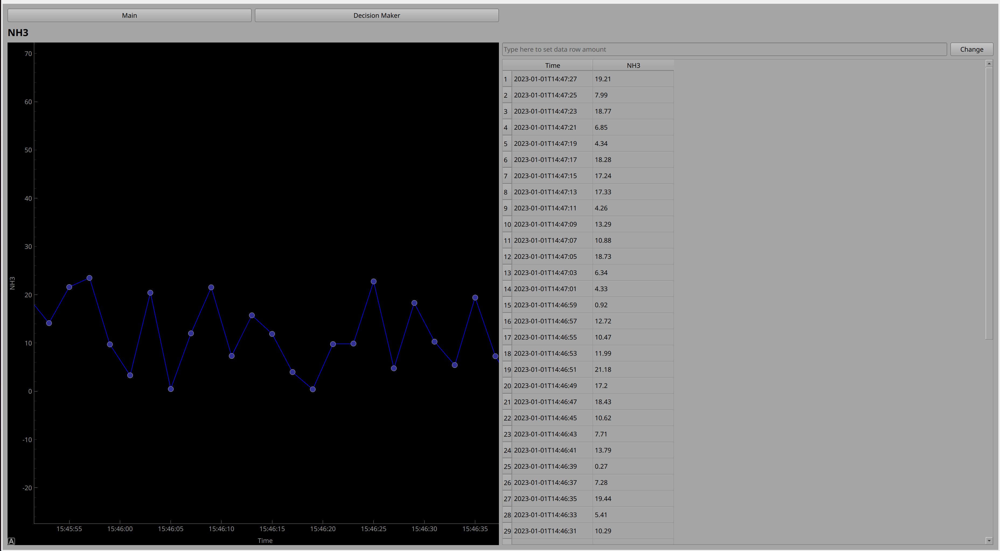

Everything that powers the A.U.R.A. Predictive Maintenance System
Our core software analyzes real-time spacecraft data collected by ECLSS sensors, automatically identifying potential system inefficiencies or anomalies and providing early warnings to mission operators. The predictive system enables faster decision-making and ensures optimal mission safety and performance.
The system features role-based access control with three user types: administrators who manage user accounts and system settings, operators who monitor real-time data and respond to alerts, and analysts who review historical data and train machine learning models.


The data ingestion module captures vast sensor streams in real time, converting them into clear visual insights. The Main Dashboard displays subsystem parameters from 28+ sensors organized into 13 critical life support categories — atmospheric composition, system output rates, temperatures, pressures, and contamination levels. Auto-refresh every second ensures operators always view the latest data.
The Isolation Forest algorithm analyzes and preprocesses sensor data collected from the spacecraft, detecting anomalies or irregular patterns in the sensor readings that may indicate system faults, sensor drift, or unexpected environmental conditions.
By filtering and labeling this data before it is used for model training, the quality and reliability of the dataset is significantly improved. This ensures that the reinforcement learning and other predictive models are trained on accurate, representative information.


An interactive digital representation of the spacecraft enables operators to visualize system states, test maintenance procedures, and validate repairs before implementation. By leveraging the digital twin, a reinforcement learning (RL) model is trained to experience and learn from a wide range of realistic scenarios, including rare or high-risk events — without risking actual hardware or crew safety.
The AI Decision page integrates all machine learning model outputs and generates predictive maintenance recommendations based on real-time sensor data analysis. It synthesizes information from anomaly detection, remaining useful life predictions, and reinforcement learning models to provide operators with actionable insights.
Recommendations are prioritized by risk level and confidence score, allowing operators to focus on the most critical maintenance actions. The system continuously learns from outcomes, improving prediction accuracy over time.


The A.U.R.A. system features a comprehensive PyQt5-based user interface with specialized pages for different operational roles:
A.U.R.A. is optimized for real-time operations in the resource-constrained environment of spacecraft systems, with proven performance improvements over traditional reactive maintenance approaches.
All components work together seamlessly to provide a comprehensive predictive maintenance solution that enhances crew safety, reduces operational costs, and improves mission success rates.
The A.U.R.A. System: From Data to Decisions to Crew Safety